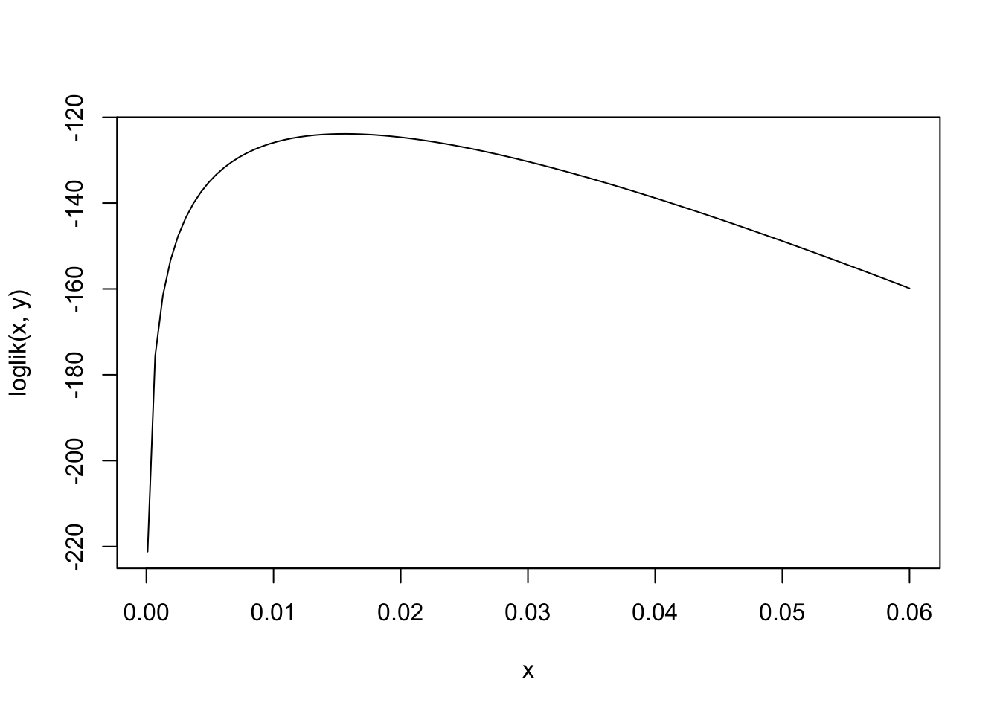
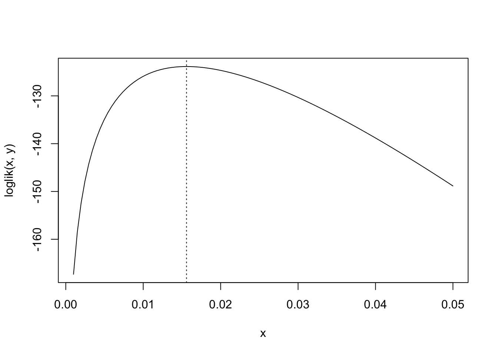
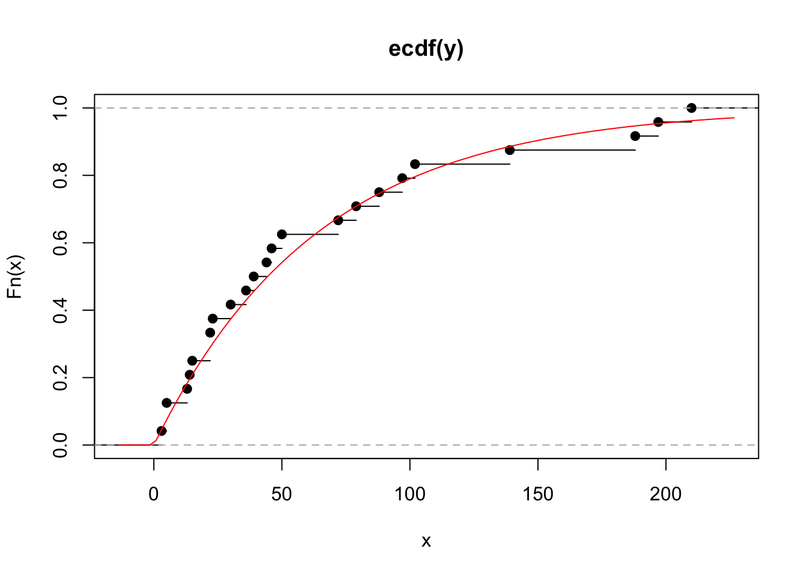
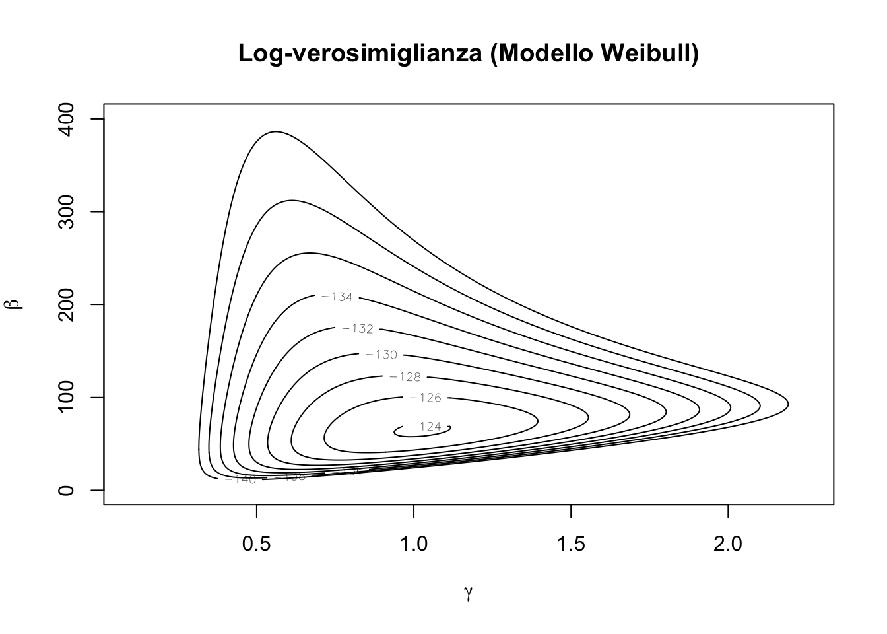
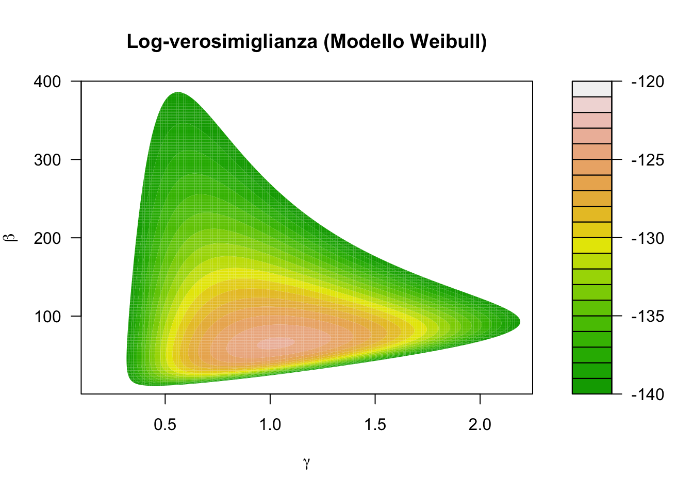
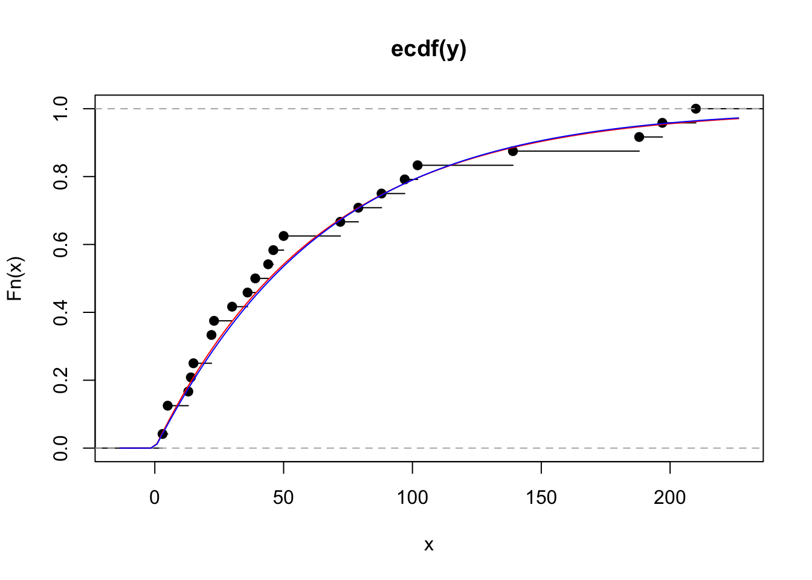

loglik <- function(lambda, y) {
length(y) * log(lambda) - lambda * sum(y)
}
loglik2 <- function(lambda, y) {
sum(dexp(y, rate = lambda, log = TRUE))
}
loglik3 <- function(lambda, y) {
sum(log(lambda) - lambda * y)
}R per l’analisi statistica multivariata
Unità K: analisi di verosimiglianza
Argomenti affrontati
- Aspetti numerici legati all’inferenza tramite verosimiglianza
- Stima numerica di massima verosimiglianza
- Il caso multiparametrico (grafici
contour)
Nota
Gli esercizi R associati sono disponibili a questo link
Un breve sommario
In questa unità procederemo tramite esempi, volti a mostrare alcuni aspetti numerici e grafici legati alla verosimiglianza in modelli parametrici.
In primo luogo, considereremo un esempio di modello con parametro scalare.
Quindi, considereremo un esempio modello con parametro vettoriale.
Per ovvie ragioni, non avremo tempo / modo di ripercorrere l’intero programma di Statistica II.
Pertanto è di fondamentale importanza che gli argomenti di inferenza statistica siano ben chiari.
Ripasso & notazione
Nel caso assolutamente continuo, un modello statistico è una collezione di funzioni di densità \[ \mathcal{F} = \{f(\cdot ; \theta) : \theta \in \Theta\}, \] indicizzata da un vettori di parametri \(\theta \in \Theta\), dove \(\Theta \subseteq \mathbb{R}^p\) è lo spazio parametrico.
Nel caso discreto, la definizione di modello statistico è la medesima, ma considerando delle funzioni di probabilità \(p(x ; \theta)\) al posto delle densità.
Assumiamo inoltre che che \(y = (y_1,\dots,y_n)\) sia un campione (spesso iid) con legge congiunta \(f(y; \theta)\), per un qualche ignoto valore del parametro \(\theta\).
Relativamente ad un modello statistico \(\mathcal{F}\) di cui è stato osservato un campione \(y\), si chiama verosimiglianza la funzione da \(\Theta\) in \(\mathbb{R} \cup \{0\}\) \[ \mathcal{L}(\theta) = \mathcal{L}(\theta; y) = C \: f(y; \theta), \] dove \(C = C(y)\) è una costante positiva che non dipende da \(\theta\).
Ripasso e notazione
Assumiamo che campione \(y = (y_1,\dots,y_n)\) sia composto da realizzazioni indipendenti ed identicamente distribute da una variabile casuale legge \(f(y; \theta)\). Quindi, si ottiene \[ \mathcal{L}(\theta) = \mathcal{L}(\theta; y) = C \: \prod_{i=1}^n f(y_i; \theta). \]
Dato che \(\mathcal{L}(\theta)\) è non-negativa, spesso si lavora con la funzione di log-verosimiglianza \[ \ell(\theta) = \ell(\theta; y) = \log\mathcal{L}(\theta) = c + \sum_{i=1}^n\log f(y_i; \theta), \] dove \(c \in \mathbb{R}\) è una costante additiva che non dipende da \(\theta\).
La stima di massima verosimiglianza
La stima di massima verosimiglianza (SMV) è il valore \(\hat{\theta}\) che rende massima la funzione di verosimiglianza \(\mathcal{L}(\theta)\) sullo spazio \(\Theta\), cioè tale per cui \[ \mathcal{L}(\hat{\theta}) = \sup_{\theta \in \Theta}\mathcal{L}(\theta). \]
La SMV rende massimo anche la funzione di log-verosimiglianza, per cui \[ \ell(\hat{\theta}) = \sup_{\theta \in \Theta}\ell(\theta). \]
Di conseguenza, sotto opportune condizioni di regolarità, la SMV si ottiene come soluzione dell’equazione \(\ell'(\theta) = 0\).
Non è detto che la SMV esista.
La SMV \(\hat{\theta} = \hat{\theta}(y)\) è una funzione del campione, anche se a volte tale funzione non è rappresentabile esplicitamente.
Parametro scalare: modello esponenziale
Sia \(y = (y_1,\dots,y_n)\) un campione iid da una variabile casuale esponenziale con tasso di guasto \(\lambda\), ovvero \(Y \sim \text{Exp}(\lambda)\).
Si ricordi che la densità di un modello esponenziale è \[ f(y; \lambda) = \lambda e^{-\lambda y}, \qquad y, \lambda > 0. \]
Di conseguenza, la funzione di log-verosimiglianza associata al campione \(y\) è \[ \ell(\lambda) = \ell(\lambda; y) = n \log \lambda - \lambda\sum_{i=1}^ny_i. \]
Esercizio
Nel caso la derivazione di \(\ell(\lambda)\) non fosse immediatamente chiara, si svolgano per esercizio tutti i passaggi.
Parametro scalare: modello esponenziale
La funzione che calcola la verosimiglianza in può essere implementata in vari modi.
Consideriamo il dataset aircondit7 della libreria boot, contenente i tempi di rottura relativi al sistema di condizionamento di alcuni aeroplani.
library(boot)
data("aircondit7")
y <- aircondit7$hourscurve(loglik(x, y), 1e-4, 0.06) # log-verosimiglianza nell'intervallo (0.001, 0.06)
Le funzione vettorizzabili I
Le tre funzioni implementate sono apparentemente equivalenti:
loglik(0.01, y)[1] -125.9141loglik2(0.01, y)[1] -125.9141loglik3(0.01, y)[1] -125.9141Tuttavia, solamente la prima è correttamente vettorizzata:
# Risultato corretto
loglik(c(0.01, 0.02, 0.03), y)[1] -125.9141 -124.6686 -130.3274# I seguenti comandi producono invece dei risultati errati
loglik2(c(0.01, 0.02, 0.03), y)[1] -127.97loglik3(c(0.01, 0.02, 0.03), y)[1] -127.97Le funzioni vettorizzabili II
Il linguaggio R ama lavorare in modo vettoriale (e tipicamente odia i cicli for…)
Solamente loglik è una funzione vettorizzata rispetto al parametro lambda.
In altri termini, la funzione loglik può essere valutata in un vettore di punti ed il risultato sarà il vettore di valori di log-verosimiglianza associati.
Fortunatamente, le funzioni possono essere “convertite” come segue:
loglik2 <- Vectorize(loglik2, vectorize.args = "lambda")
loglik3 <- Vectorize(loglik3, vectorize.args = "lambda")
loglik(c(0.01, 0.02, 0.03), y)[1] -125.9141 -124.6686 -130.3274loglik2(c(0.01, 0.02, 0.03), y)[1] -125.9141 -124.6686 -130.3274loglik3(c(0.01, 0.02, 0.03), y)[1] -125.9141 -124.6686 -130.3274Qualche cenno alle performance
Nonostante producano lo stesso risultato, le tre funzioni non hanno la stessa efficienza in termini di tempo.
Una funzione nativamente vettorizzata è tipicamente più rapida di una conversione.
Possiamo misurare le performance usando, ad esempio, il pacchetto microbenchmark.
library(microbenchmark) # Se assente, va installata
microbenchmark(
L1 = loglik(c(0.01, 0.02, 0.03), y),
L2 = loglik2(c(0.01, 0.02, 0.03), y),
L3 = loglik3(c(0.01, 0.02, 0.03), y)
)Unit: microseconds
expr min lq mean median uq max neval
L1 1.084 1.2690 2.05020 1.6885 1.879 23.795 100
L2 30.432 31.2375 34.10786 31.8680 32.646 124.829 100
L3 27.913 28.6120 33.78249 29.2290 32.370 92.659 100La stima di massima verosimiglianza
La funzione punteggio e l’informazione osservata del modello esponenziale sono pari a \[ \ell'(\lambda) = \frac{n}{\lambda} - \sum_{i=1}^ny_i, \qquad j(\lambda) = - \ell''(\lambda) = \frac{n}{\lambda^2}. \]
Entrambe queste funzioni sono utili per motivi inferenziali. Ad esempio la stima di massima verosimiglianza si ottiene (nei casi regolari) ponendo \(\ell'(\lambda) = 0\).
In questo caso quindi avremo \[ \hat{\lambda} = \frac{n}{\sum_{i=1}^ny_i} = \frac{1}{\bar{y}}. \]
L’informazione osservata (in questo caso coincidente con l’informazione attesa) è invece estremamente utile per costruire ad esempio intervalli di confidenza
La stima di massima verosimiglianza (numerica)
Come vederemo in seguito, risolvere l’equazione \(\ell'(\lambda) = 0\) può essere problematico (ovviamente non nel caso esponenziale…).
Procedure numeriche
In questi casi “difficili”, la stima di massima verosimiglianza può essere ottenuta tramite procedure numeriche.
In altri termini, utilizzeremo un algoritmo iterativo che produce una sequenza di valori \(\lambda_1, \lambda_2, \dots\), tali che, quantomeno idealmente, \[ \ell(\lambda_{k+1}) \ge \ell(\lambda_k). \]
Il nuovo valore \(\lambda_{k+1}\) è tipicamente ottenuto a partire dal valore precedente \(\lambda_k\).
Pertanto, questa tipologia di algoritmi hanno bisogno di un valore iniziale \(\lambda_1\) definito dall’utente.
Dopo un certo numero di iterazioni, quando non si osservano più variazioni significative in termini di \(\lambda\) e/o \(\ell(\lambda)\), l’algoritmo si ferma e si dice che è arrivato a convergenza.
Il metodo di Newton-Raphson I
Nel metodo di Newton-Raphson, consideriamo lo sviluppo di Taylor della funzione di log-verosimiglianza \(\ell(\lambda)\) nel generico punto \(\lambda_k\), troncato al termine quadratico \[ \ell(\lambda) \approx \ell(\lambda_k) + \ell'(\lambda_k)(\lambda - \lambda_k) + \frac{\ell''(\lambda_k)}{2}(\lambda - \lambda_k)^2. \]
Massimizziamo tale sviluppo, equivalente a trovare il vertice di una parabola, e quindi otteniamo l’equazione di verosimiglianza approssimata \[ \ell'(\lambda) - j(\lambda_k)(\lambda - \lambda_k) = 0, \] che risolta rispetto a \(\lambda\) porta allo schema iterativo \[ \lambda_{k + 1} = \lambda_k + j(\lambda_k)^{-1}\ell'(\lambda_k), \qquad k=1,2,\dots. \]
Nota
Il metodo considera di fatto una serie di approssimazioni paraboliche della log-verosimiglianza, per le quali si va ogni volta a valutare il punto di massimo.
Il metodo di Newton-Raphson II
Il metodo Newton-Raphson appena descritto si può implementare in come segue:
lambda <- numeric(10); lambda[1] <- 0.005 # Punto iniziale (cosa succede cambiandolo?)
n <- length(y); sum_y <- sum(y)
# Algorithmo Newton-Raphson
for(k in 1:5){
score <- n / lambda[k] - sum_y # Funzione score
obs_info <- n / lambda[k]^2 # Informazione osservata
lambda[k + 1] <- lambda[k] + score / obs_info # Passo iterativo
print(c(lambda[k + 1], loglik(lambda[k + 1], y)), digits = 3) # Mostro i risultati
}[1] 0.0084 -127.6403
[1] 0.0123 -124.4969
[1] 0.0149 -123.8855
[1] 0.0156 -123.8601
[1] 0.0156 -123.8600Il risultato esatto, in questo caso, è facile da calcolare e lo riportiamo per un confronto:
lambda_hat <- 1 / mean(y)
c(lambda_hat, loglik(lambda_hat, y))[1] 0.01559454 -123.86002328Metodi di massimizzazione
In pratica, in R esistono diverse funzioni per la massimizzazione, basate su varie elaborazioni del metodo di Newton-Raphson (che noi non vedremo).
Tutte queste funzioni richiedono un valore iniziale ma non necessitano dei valori delle derivate, che vengono approssimate internamente.
Le funzioni richiedono inoltre un qualche criterio di arresto.
Alcuni metodi permettono l’utilizzo di vincoli sui parametri.
Nota
Per ragioni storiche, le funzioni di R identificano sempre il minimo della funzione cercata. Tuttavia: \[ \arg \max_{\lambda \in \mathbb{R}} \:\ell(\lambda) = \arg \min_{\lambda \in \mathbb{R}} \:- \ell(\lambda). \] In altri termini, è sufficiente cambiare di segno la funzione obiettivo.
La funzione nlminb
La funzione nlminb effettua minimizzazioni numeriche, anche vettoriali.
È una routine generalmente considerata più stabile, robusta ed affidabile della funzione concorrente optim, che vedremo in seguito.
Inoltre, consente di incorporare dei vincoli sui parametri, qualora questi fossero presenti.
Nel modello esponenziale, per esempio, si ha il vincolo \(\lambda > 0\).
# start = 1 significa che il valore iniziale è pari a 1
# lower = 1e-5 implica che lambda > 0
fit_exp <- nlminb(start = 1, objective = function(lambda) - loglik(lambda, y), lower = 1e-5)
fit_exp$par
[1] 0.01559454
$objective
[1] 123.86
$convergence
[1] 0
$iterations
[1] 16
$evaluations
function gradient
24 19
$message
[1] "relative convergence (4)"lambda_hat <- fit_exp$par # Stima di massima verosimiglianza
curve(loglik(x, y), 0.001, 0.05)
abline(v = lambda_hat, lty = "dotted")
optim(par = 1, fn = function(lambda) - loglik(lambda, y), lower = 1e-5, method = "L-BFGS-B", hessian = TRUE)$par
[1] 0.01561446
$value
[1] 123.86
$counts
function gradient
29 29
$convergence
[1] 0
$message
[1] "CONVERGENCE: REL_REDUCTION_OF_F <= FACTR*EPSMCH"
$hessian
[,1]
[1,] 99253.17# Informazione osservata
obs_info <- length(y) / lambda_hat^2
obs_info[1] 98688.38Adeguatezza del modello
plot(ecdf(y))
curve(pexp(x, lambda_hat), col = "red", add = TRUE)
Parametro vettoriale: il modello Weibull I
Sia \(y = (y_1,\dots,y_n)\) un campione iid da una variabile casuale Weibull di parametri \((\gamma, \beta)\), ovvero \(Y \sim \text{Weib}(\gamma, \beta)\).
Si ricordi che la densità di un modello Weibull è \[ f(y; \gamma, \beta) = \frac{\gamma}{\beta} \left(\frac{y}{\beta}\right)^{\gamma - 1} e^{-(y / \beta)^\gamma}, \qquad y, \gamma, \beta > 0. \]
Di conseguenza, la funzione di log-verosimiglianza associata al campione \(y\) è \[ \ell(\gamma, \beta) = \ell(\gamma, \beta; y) = n \log \gamma - n \gamma \log \beta + \gamma \sum_{i=1}^n\log y_i - \sum_{i=1}^n \left(\frac{y_i}{\beta}\right)^\gamma. \]
Esercizio
Si ottenga la precedente log-verosimiglianza (carta e penna)
Parametro vettoriale: il modello Weibull II
La funzione che calcola la verosimiglianza in R può essere implementata in vari modi. Ne presentiamo qui uno dei tanti basato sulla funzione dweibull
loglik <- function(par, y) {
sum(dweibull(y, shape = par[1], scale = par[2], log = TRUE))
}Siamo interessati a capire se il modello Weibull, che generalizza quello esponenziale, rappresenta una scelta modellistica migliore.
Consideriamo anche in questo caso il dataset aircondit7 della libreria boot:
library(boot)
data("aircondit7")
y <- aircondit7$hoursGrafico della verosimiglianza I (facoltativo)
In generale non è possibile disegnare dei grafici della verosimiglianza con parametri vettoriali.
L’unica eccezione è il caso \(p = 2\), in cui possiamo usare i cosiddetti grafici contour, basati sulle curve di livello.
Per fare questo tipo di grafico, bisogna procedere per step.
Step 1. Anzitutto bisogna definire un per ciascuna componente del parametro.
Step 2. Bisogna quindi calcolare la log-verosimiglianza in ciascuna coppia di punti della griglia definita dal prodotto cartesiano dei due intervalli.
Grafico della verosimiglianza II (facoltativo)
Gli estremi degli intervalli vanno scelti manualmente. In pratica, bisogna procedere per tentativi se si vuole disegnare la verosimiglianza in una regione “sensata”.
# Definizione degli intervalli di punti
gamma <- seq(0.1, 2.25, length = 200)
beta <- seq(0.5, 400, length = 200)
# Ottenimento della griglia tramite prodotto cartesiano
parvalues <- expand.grid(gamma, beta)
# Calcolo valori di verosimiglianza
llikvalues <- apply(parvalues, 1, loglik, y = y)
# Ri-organizzazione dei valori della log-verosimiglianza in forma matriciale
llikvalues <- matrix(llikvalues, nrow = length(gamma), ncol = length(beta), byrow = F)Quindi, il grafico contour oppure sua variante filled.contour si possono ottenere abbastanza facilmente.
contour(gamma, beta, llikvalues,
xlab = expression(gamma), ylab = expression(beta), # Produce le lettere greche nel grafico
levels = seq(from = -140, to = -120, by = 2),
main = "Log-verosimiglianza (Modello Weibull)")
filled.contour(gamma, beta, llikvalues,
xlab = expression(gamma), ylab = expression(beta),
levels = seq(from = -140, to = -120, by = 1),
col = terrain.colors(20), main = "Log-verosimiglianza (Modello Weibull)")
Stima di massima verosimiglianza
Nel caso Weibull la funzione punteggio è un vettore di dimensione due, che conduce alle \[ \begin{aligned} \frac{\partial}{\partial \gamma}\ell(\gamma, \beta) & = \frac{n}{\gamma} - n \log\beta + \sum_{i=1}^n\log{y_i} - \sum_{i=1}^n\left(\frac{y_i}{\beta}\right)^\gamma \log\left(\frac{y_i}{\beta}\right) = 0, \\ \frac{\partial}{\partial \beta}\ell(\gamma, \beta) &= - \frac{n \gamma}{\beta} +\frac{\gamma}{\beta^{\gamma+1}} \sum_{i=1}^ny_i^\gamma = 0. \end{aligned} \]
Risolvendo la seconda equazione otteniamo la stima vincolata \(\hat{\beta}_\gamma = \left(\frac{1}{n}\sum_{i=1}^n y_i^\gamma \right)^{1/\gamma}\), per ogni \(\gamma\) fissato.
Problema chiave
Sostituendo \(\hat{\beta}_\gamma\) nella prima equazione otteniamo quindi: \[ \frac{n}{\gamma} + \sum_{i=1}^n\log y_i - n \frac{\sum_{i=1}^n y_i^\gamma \log y_i}{\sum_{i=1}^n y_i^\gamma} = 0. \] Quest’ultima equazione purtroppo non ammette una soluzione analitica.
Stima di massima verosimiglianza
Per trovare la stima di massima verosimiglianza dobbiamo quindi procedere per via numerica.
Sebbene esistano in R dei comandi che calcolano gli zeri di una funzione (uniroot), per identificare il massimo è numericamente più stabile far uso di funzioni dedicate.
Oltretutto, questo ci evita di dover fare dei conti analitici, come la derivata prima.
Anche in questo caso bivariato, si è specificato il limite inferiore del dominio della funzione, ovvero \(\gamma, \beta > 0\).
fit_weibull <- nlminb(start = c(1, 1), function(par) -loglik(par, y), lower = c(1e-7, 1e-7))
fit_weibull$par
[1] 1.024919 64.792419
$objective
[1] 123.8483
$convergence
[1] 0
$iterations
[1] 21
$evaluations
function gradient
22 49
$message
[1] "relative convergence (4)"plot(ecdf(y))
curve(pexp(x, fit_exp$par), col = "red", add = TRUE)
curve(pweibull(x, fit_weibull$par[1], fit_weibull$par[2]), col = "blue", add = TRUE)